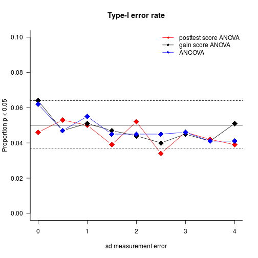
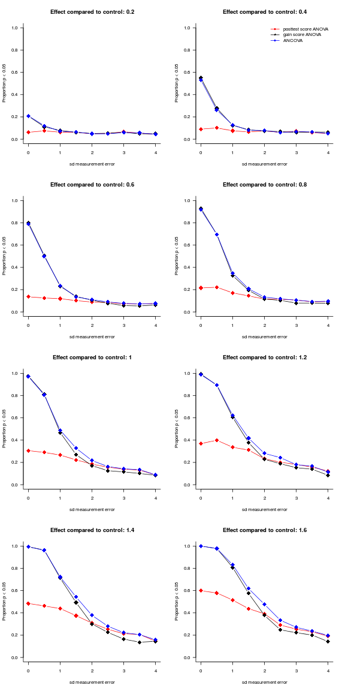

# Parameters
n = 20 # number of participants in each condition
sdPretestAbility = 2 # standard deviation of ABILITY at pretest
ControlEffect = 1 # average improvement in ABILITY for control group
ExperimentEffect = 1 # average improvement in ABILITY for experimental group
sdSensitivity = 0.5 # standard deviation of the participants' sensitivity to the treatment
sdMeasurement = 0 # standard deviation of measurement error at pre- and posttestAnalysing pretest/posttest data
significance
power
simplicity
R
Assigning participants randomly to the control and experimental programmes and testing them before and after the programme is the gold standard for determining the efficacy of pedagogical interventions. But the analyses reported in research articles are often needlessly complicated and may be suboptimal in terms of statistical power.
A randomised pretest/posttest control group study
Say you’ve developed a new method for autonomously learning to read a related foreign language and you want to establish if your method is more efficient than the one currently used. To address this question, you design an experiment along the following lines:
- You recruite 40 motivated students and randomly assign half of them to the control group (current method) and half to the experimental group (new method).
- To take pre-existing differences in foreign-language reading skills into account, you administer a pretest to all participants.
- Six weeks into the programme, the participants are tested again.
There you have it – a classic randomised pretest/posttest control group experiment! But how do you go about analysing the data?
Four analytical options
By and large, analyses of pretest/posttest experiments in the literature fall into four categories: ANOVAs on the posttest scores only, repeated-measures ANOVAs, ANOVAs on the pretest/posttest differences, and ANCOVAs. The first two are underpowered and overcomplicated, respectively, whereas the third is subject to an assumption that is likely to be violated in real data. The points I want to make aren’t new (see Hendrix et al. 1978; Huck & McLean, 1975), but it can’t hurt to reiterate them – especially since I wasn’t aware of them myself until a couple of days ago.
ANOVA on the posttest scores
One (thankfully infrequent) option is to compare the control and experimental groups by running an ANOVA or, equivalently, a t-test on the posttest scores whilst disregarding the pretest scores. This amounts to pretending you’ve ran a posttest-only experiment and forgoes the benefits afforded by the pretest/posttest design: Since the participants have been randomly assigned to the conditions, your estimate of the new method’s effect will be correct on average (as they would’ve been in a posttest-only experiment). But by not taking into account pre-existing individual differences, the uncertainty about this estimate (i.e. its standard error) is larger than it needs to be, resulting in a loss of statistical power, as the simulations below show.
Sometimes, the pretest scores are used in a complementary ANOVA or t-test that is intended to verify whether the two groups were comparable at the start of the programme. A discussion of such ‘randomisation checks’ or ‘balance tests’ could be the topic of another blog post; suffice it to say for now that such additional analyses are completely superfluous and uninformative in randomised experiments and that acting on them can invalidate the p-values of the main analysis.
Repeated-measures ANOVA
A far superior alternative is to take both the pretest and the posttest into account in the main analysis. This is often accomplished by fitting a 2 (control vs experimental group) × 2 (pretest vs posttest) repeated-measures ANOVA. This method is superior to merely using the posttest scores as every participant now serves as their own control, which reduced the error variance and hence the statistical power.
As Huck & McLean (1975) point out, however, it is also needlessly complicated: the RM-ANOVA table features 3 effects (main effect of condition, main effect of test as well as the interaction between condition and test), only one of which (the interaction) is relevant to the research question. The other two terms provide either irrelevant (main effect of condition) or trivial (main effect of test) information and are bound to lead to faulty interpretations. In short, RM-ANOVAs is likely to cause information overload for both researchers and readers.
ANOVA on the gain scores
An altogether more straightforward and more reader-friendly tack is to compute gain scores by subtracting the pretest scores from the posttest scores and running a one-way ANOVA (or t-test) on them. The p value associated with the effect of condition will be identical to the one associated with the interaction term in the RM-ANOVA. In a nutshell, RM-ANOVAs don’t offer anything relevant over and beyond an ordinary ANOVA or a simple t-test when analysing simple pretest/posttest data.
We’re not there yet: Pretest scores as a covariate (ANCOVA)
RM-ANOVAs or, equivalently, one-way ANOVAs on gain scores come with an assumption that I don’t think is widely appreciated – viz. that the pretest and posttest scores are linearly related with a slope equal to 1 (see Hendrix et al. 1978; Huck & McLean, 1975). At least, I wasn’t aware of this assumption until a while ago! The ‘slope = 1’ assumption is clearly violated when the pretest and posttest scores are on different scales, e.g. a 7-point scale pretest and a 100-point scale posttest. Less obviously, the assumption can be violated by mere everyday measurement error that results in regression to the mean.
When the construct of, say, foreign-language reading skills is operationalised by means of a necessarily imperfect test, the test result will overestimate some participants’ true skills and underestimate others’ due to extraneous factors such as form on the day, topic of the reading test etc. – in a word: luck. When the same participants are tested again at posttest, participants who over- or underperformed by a wide margin at pretest aren’t likely to be as lucky or unlucky at posttest. The result is that the slope of the linear relationship between pretest and posttest scores will tend to be less than 1, even if both tests are scored on the same scale.
With ANCOVA (analysis of covariance), we can bring the pretest scores into the model as a covariate. Unlike when using RM-ANOVAs or gain score ANOVAs, we wouldn’t have to assume that the slope linking the pretest and the posttest scores was 1: we can estimate the slope from the data. This, in principle, would make for more accurate inferences with regard to the effect of condition, but at the cost of one degree of freedom. So how do the two methods (ANOVA and ANCOVA) compare in terms of statistical power and Type-I error rate?
A simulation
To get an idea of the Type-I error rate and statistical power associated with posttest score ANOVAs, gain score ANOVAs and ANCOVAs, I programmed a simulation of the hypothetical study described above (R code below).
The participants pretest ability (the underlying construct) is programmed to be normally distributed with a to-be-specified standard deviation (sdPretestAbility). The average expected improvement due to the control method and the experimental method are specified as ControlEffect and ExperimentEffect, respectively. Additionally, participants are allowed to differ in their learning progress; their learning aptitude, if you will, is normally distributed with a standard deviation set in sdSensitivity. Lastly, the pre- and posttests have independent but identically distributed measurement errors, whose standard deviation is set in sdMeasurement. This means that the tests are equally accurate but that ‘being lucky’ on the pretest shouldn’t be associated with being lucky on the posttest. (If pretest ability is distributed with a standard deviation of 2 and the standard deviation of the measurement errors is 1, the pretest scores account for 80% of the variance in pretest ability (R² = 2² / (2² + 1²) = 80%). For sdMeasurement values of 0, 2 and 4, the R² values are 100%, 50% and 20%, respectively.)
The function simulatePrePost.fnc() simulates a single experiment and conducts three analyses on it: a one-way ANOVA on the posttest scores, a one-way ANOVA on the gain scores (again, this is equivalent to running a RM-ANOVA) and an ANCOVA on the posttest scores with the pretest scores as a covariate. The p values associated with the effect of condition in the three analyses are then returned. replicatePrePost.fnc() runs simulatePrePost.fnc() a number of times (e.g. 1000 times) and returns the proportion of significant p values for each analysis type as well as some additional bits and pieces (e.g. the average slope linking pretest and posttest scores in the simulations).
The parameters for the simulation were set as specified above with the exception of ExperimentEffect and sdMeasurement, which varied between 1 and 2.6 (as effective to more than twice as effective as the control) and 0 and 4 (no measurement error to only a very rough approximation of reading skills), respectively. For every combination of ExperimentEffect and sdMeasurement I simulated 1000 datasets, which were analysed by means of posttest score ANOVA, gain score ANOVA and ANCOVA. The results of this simulation are available here.
Type-I error rate
‘Type-I error rate’ is just stats speak for ‘How often do we find a significant effect when there isn’t any?’ By tradition, we typically accept a nominal Type-I error rate of 5%, meaning that even if the control and experimental treatments are equally effective, we expect to find a significant difference in our sample in about 50 out of 1000 runs.
To investigate the Type-I error rate, I just consider the simulation runs for which I set ExperimentEffect to the same value as ControlEffect (i.e. 1). The following graph plots the observed Type-I error rate by analysis method and measurement error. The solid horizontal line represents the nominal 5% Type-I error rate; the dashed lines give you an idea by how much the error rate can vary due to random sampling: if the true Type-I error rate is 0.05, the points will lie between the dashed lines in 95% of cases.

All methods perform on par in terms of Type-I error rate – any differences between them don’t seem to be systematic and can likely be accounted for by sampling error.
Statistical power
‘Statistical power’ refers to your chances of finding a significant effect when the treatments do differ in efficacy. Power increases with increasing effects and more precise measurement – a truism that is reflected in the graphs below. As is also obvious, posttest-only ANOVAs compare poorly to analyses that take the pretest scores into consideration. For datasets characterised by substantial measurement error, ANCOVAs outperform gain score ANOVAs fairly systematically, but for datasets with negligible measurement error, both methods are roughly equally as good.

Conclusions
Here’s the tl;dr summary:
Use pretest scores if available.
Repeated-measures ANOVA is too fancy-shmancy for a pretest/posttest design.
ANCOVA is (a bit) more powerful.
My intuition is that gain score ANOVAs will outperform ANCOVAs in very small samples when the measurement errors are negligible (due to the loss of one degree of freedom that goes into estimating the slope parameter). That said, one advantage of ANCOVAs that we haven’t looked at is that they don’t require that the pre- and posttests be measured on the same scale. Additionally, they can account for non-linear relationships between pretest and posttest scores by adding higher-order terms. But that’ll be for another time.
Simulation code
To run these simulations yourself or extend them, you can use the following R code:
simulatePrePost.fnc <- function(n = 20,
sdPretestAbility = 3,
ExperimentEffect = 2,
ControlEffect = 2,
sdSensitivity = 1,
sdMeasurement = 1) {
# Simulate pretest ability
PretestAbility <- rnorm(n*2, 10, sdPretestAbility)
# Control and experiment effects
InterventionEffect <- c(rep(ControlEffect, n), # control group
rep(ExperimentEffect, n)) # intervention group
# Individual sensitivity to the effects
InterventionSensitivity <- rnorm(n*2, 1, sd = sdSensitivity)
# Add group labels
Group <- c(rep("Control", n),
rep("Intervention", n))
# Pretest scores (with measurement error)
Pretest <- PretestAbility + rnorm(n*2, 0, sdMeasurement)
# Posttest scores: pretest ability + effect * sensitivity + measurement error
Posttest <- PretestAbility + InterventionEffect * InterventionSensitivity + rnorm(n*2, 0, sdMeasurement)
# p-value ANOVA on posttests
pANOVAPost = anova(lm(Posttest ~ Group))$'Pr(>F)'[[1]]
# p-value ANOVA on gain scores
pANOVAGain = anova(lm(I(Posttest-Pretest) ~ Group))$'Pr(>F)'[[1]]
# p-value ANCOVA
pANCOVA = anova(lm(Posttest ~ Pretest + Group))$'Pr(>F)'[[2]]
# slope between pretest and posttest
slope = coef(lm(Posttest ~ Pretest + Group))['Pretest']
# spit it all out
return(list(pANOVAPost = pANOVAPost,
pANOVAGain = pANOVAGain,
pANCOVA = pANCOVA,
slope))
}
replicatePrePost.fnc <- function(runs = 1000,
n = 200,
sdPretestAbility = 3,
ExperimentEffect = 3,
ControlEffect = 2,
sdSensitivity = 1,
sdMeasurement = 1) {
# run simulatePrePost.fnc() n times
sims <- replicate(runs, simulatePrePost.fnc(n,
sdPretestAbility,
ExperimentEffect,
ControlEffect,
sdSensitivity,
sdMeasurement))
# Compute proportion of significant results and average slope
sigANOVAPost = mean(unlist(sims[1,])<=0.05)
sigANOVAGain = mean(unlist(sims[2,])<=0.05)
sigANCOVA = mean(unlist(sims[3,])<=0.05)
meanSlope = mean(unlist(sims[4,]))
# Spit it all out
return(list(sigANOVAPost = sigANOVAPost,
sigANOVAGain = sigANOVAGain,
sigANCOVA = sigANCOVA,
sdMeasurement = sdMeasurement,
Effect = ExperimentEffect - ControlEffect,
meanSlope = meanSlope))
}
# This tabulates all relevant combinations of sdMeasurement and ExperimentEffect
grid <- expand.grid(sdMeasurement = seq(0, 4, 0.5),
ExperimentEffect = seq(1, 2.6, 0.2))
# Load parallel package to speed up computations
library(parallel)
# Run replicatePrePost.fnc for every combination of sdMeasurement and ExperimentEffect contained in 'grid'
# I'm not sure whether this works on Mac or Windows; perhaps use mapply instead of mcmapply.
simulatedResults <- mcmapply(replicatePrePost.fnc,
sdMeasurement = grid$sdMeasurement,
ExperimentEffect = grid$ExperimentEffect,
# set fixed parameters
MoreArgs = list(runs = 1000,
ControlEffect = 1,
sdPretestAbility = 2,
sdSensitivity = 0.5,
n = 20),
# distribute work over CPU cores
mc.cores = detectCores())
# Output results (transposed for clarity)
simulatedResults <- data.frame(t(simulatedResults))